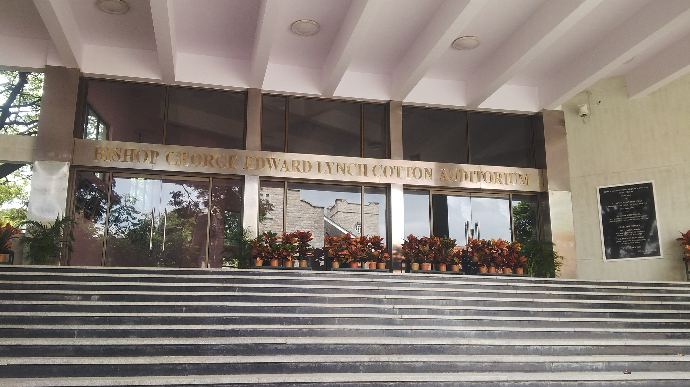
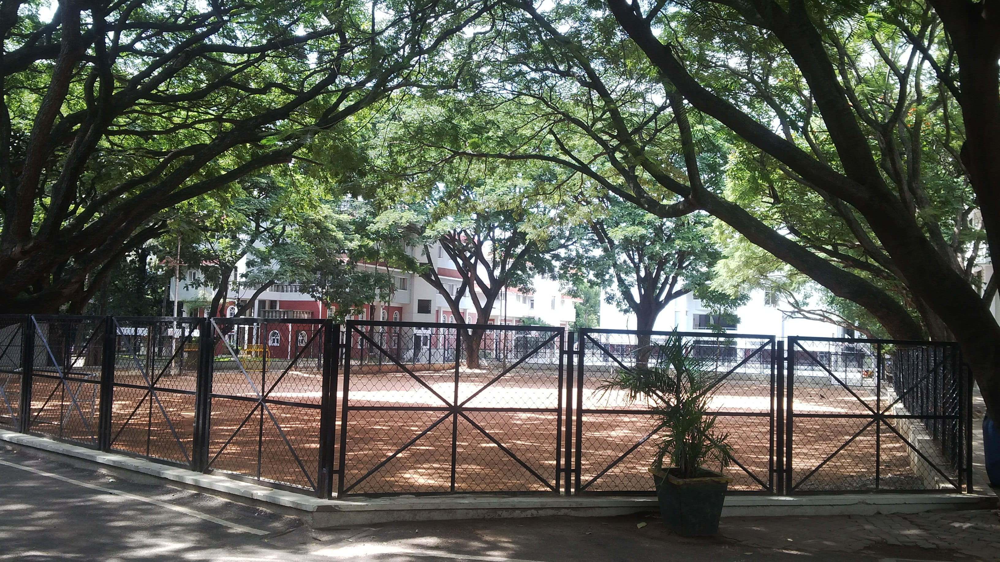

BISHOP COTTON BOYS' School
& THE 2026 FIFA World Cup
Welcome to Class 9I's classroom showcase at the historic Centenary Block. Explore our school's 160-year heritage, our in-class mini football tournament, and the global breakdown of the 2026 FIFA World Cup.
160 YEARS OF Cottonian Legacy
Founded on April 19, 1865, by the Rev. Samuel Thomas Pettigrew, Chaplain of St. Mark’s Church, Bishop Cotton Boys' School was established to deliver excellence in education and character. Named in honor of Bishop George Edward Lynch Cotton, the school relocated in 1871 to its landmark 14-acre campus on Residency Road, Bangalore under first Warden Dr. G.U. Pope. Affectionately known across India as the "Eton of the East", Cottonians have produced leaders, military generals, scientists, and sporting icons across 16 decades, guided by our eternal Latin motto: "Nec Dextrorsum, Nec Sinistrorsum" (Neither to the right, nor to the left) and our rallying anthem "On Straight On, On Cottonians On".

Residency Road, Bangalore · Est. 1865

Historic Sports Grounds of Bishop Cotton Boys' School
MINI FOOTBALL GAME In Class
In-Class Mini Football Match First!
We will be playing a live mini football game right here inside our Class 9I classroom before serving food! The food menu & refreshments will be served later right after the match concludes.
Class 9I Classroom EventSPAIN CROWNS 2026 & INDIVIDUAL Awards
Spain defeated Argentina 1–0 in Extra Time at MetLife Stadium on July 19, 2026. Ferran Torres scored the championship goal in the 106th minute.

Spain 1 – 0 Argentina (AET)
Decided in the 106th minute when Ferran Torres slotted home the winning goal to seal Spain's second World Cup trophy.
THE TOP 8 NATIONS & Tactics
Comprehensive breakdown of how the world's top 8 teams reached the final stages of the 2026 World Cup.